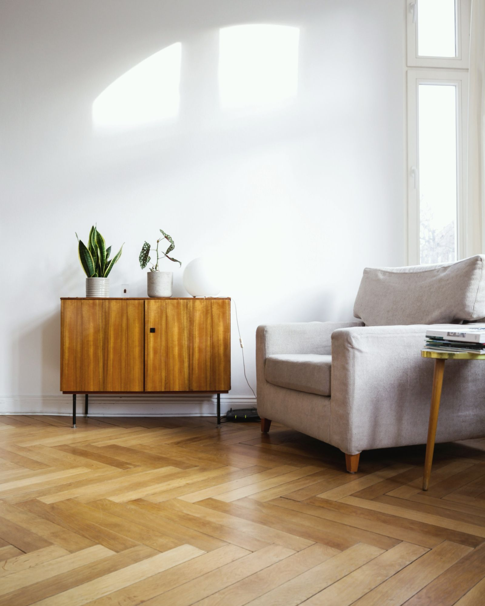
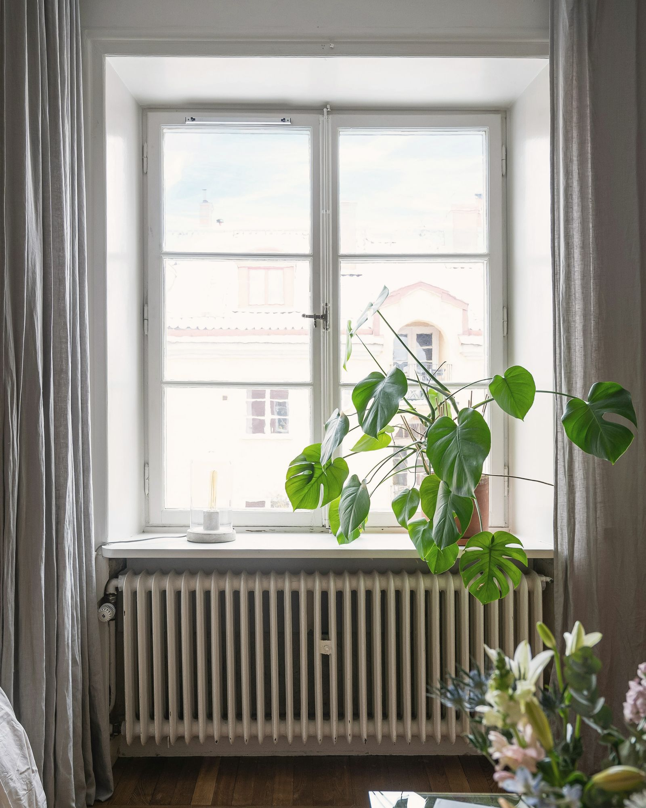

Koti Port ArthurOlohuone ja ikkunaseinäPort Arthur, Turku, 2025
Studio Utu, sisustusarkkitehdit
Studio Utu
Olemme kahden sisustusarkkitehdin toimisto Turun Port Arthurissa, ja suunnittelemme vuodessa noin viisitoista kotia ja kesähuvilaa.
Huone kerrallaan
Kuusi huonetta viidestä kohteesta
Konsultaatio
Tulemme paikalle kahdeksi tunniksi, mittaamme huoneet ja kirjoitamme muistiinpanot kahden arkipäivän kuluessa. Konsultaatio maksaa 290 €, ja matkat Turussa kuuluvat hintaan.
Otamme alkuvuodeksi 2027 vielä kaksi kokonaissuunnittelua.